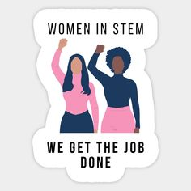

Hi. My name is Ashley Wangari and this is a 'story' about my ife so far. Well it would be a story, if the contents weren't true but they are so I think I should choose a better word. Before that, I should tell you the life goals and the interests of this person everyone knows as Ashley or Ashie (if we're close enough). All my life, i had been interested in law.For as long as I can remember I had always wanted to be a judge but my goals changed alongside my personality .Now I find myself in the IT department and I can't see myself doing anything else.My new goal is to be a senior software engineer. As for interests, I looove books.Don't get me wrong, I'm not sophisticated enough to read self help books or biographies and the like. The books i love are the ones that make my heart swoon from the romance, my brain turn while trying to figure out who the killer is, my heart beat fast from the thrillers and the like. My favorite author at the moment is Ali Hazelwood. She writes books about Women in STEM , which I can relate to because you know, I am a woman in STEM. Either way, books and movies are my happy place.Where I turn to when the going gets Tough. 